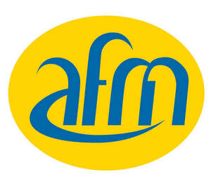
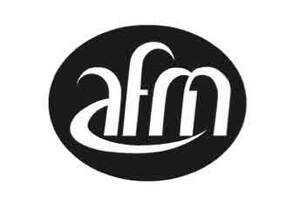

Trade Mark Journal No.2025/039 26 September 2025
UK00004265607 17 September 2025 (37,40,42,44)
Mark 1

Mark 2

- Class 37
- Building and construction services relating to commercial, industrial, public and domestic buildings, driveways and renovated buildings; cleaning services; cleaning services in respect of domestic, commercial and public buildings; mechanical services in the construction of industrial, commercial, public and domestic buildings, including heating, ventilation and air conditioning installation repair and servicing; maintenance and repair of commercial, industrial, domestic and public buildings; maintenance and repair of mechanical and electrical facilities; restoration and renovation of buildings; construction and maintenance of controlled air environments; plastering, plumbing, painting and decorating services; glazing services, electrical services in construction, electrical installation and repair services; interior decor services; roofing services; installation, maintenance and repair of burglar alarms and security systems; lock smithing services; carpet fitting and carpet laying; pest control services; installation of environmental control systems; management of building facilities, namely maintenance and care of buildings; hygienic cleaning and maintenance of areas where food and drink is prepared; remedial treatment of building defects, including damp proofing, fireproofing, waterproofing, insulation and sealing of buildings; maintenance and repair of cooling appliances and installations; information and advisory services relating to all the aforesaid services.
- Class 40
- Treatment of wood and timber; air purification and air freshening services including custom construction controlled air environments; water treatment services; industrial and commercial recycling; treatment of waste; treatment of hazardous waste; treatment of chemical waste; soil, waste or water treatment services [environmental remediation services]; information and advisory services relating to all the aforesaid services.
- Class 42
- Energy performance testing of buildings; quality control and testing services; environmental surveys; environmental analysis, environmental testing, environmental hazard assessment; research in the field of environmental protection and conservation and consultancy services relating thereto; environmental conservation; environmental consultancy services; advisory services relating to energy efficiency and use of energy; computer services; providing online tools and applications; providing online tools and applications to enable users to utilise facilities management services; hosting of websites to enable access to data, information, text, electronic publications, images and user generated content; hosting of websites to enable sharing of content amongst users; hosting of websites to enable users to book facilities management services; design and development of computer hardware and software; inspection of plant and machinery; inspection of goods for quality control; inspection of areas where food and drink is prepared; certifying the energy efficiency of buildings; information and advisory services relating to the aforesaid services. .
- Class 44
- Landscaping; garden design and maintenance; health inspection services; information and advisory services relating to the aforesaid services.
Amalgamated Facilities Management Limited
Representative: Brandsure Limited